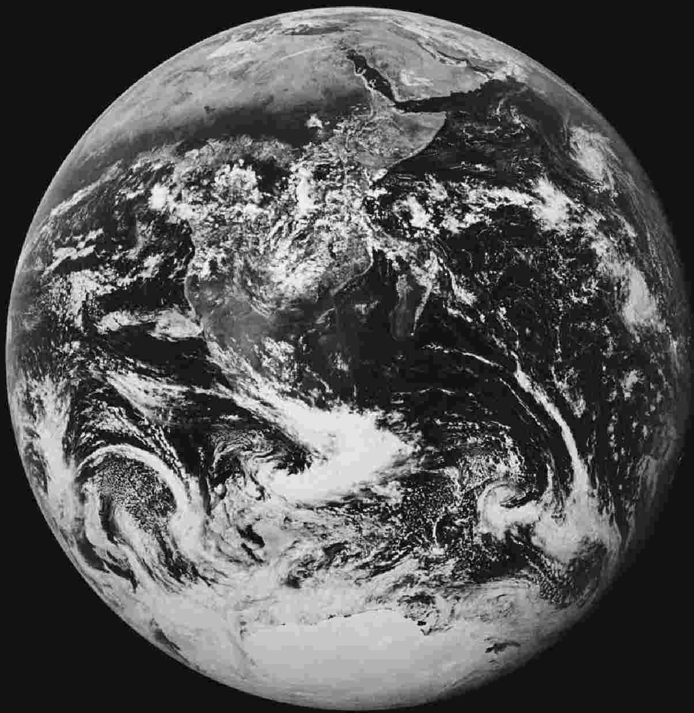

本书作者特此感谢以下诸位：感谢阿琳·朱迪丝·克洛茨科，本书的撰写离不开她的引介；感谢谢利·考克斯当初热心约稿、埃玛·西蒙斯一贯耐心相助、戴维·曼及时提供插图、保利娜·纽曼和保罗·戴维斯提出颇有助益的意见、玛丽安和埃德蒙·雷德芬助我热情饱满并帮我审读书稿、罗宾·雷德芬也卖力相助；感谢激励我始终保持严谨的无名读者，以及拨冗与我交流并用激情将我深深感染的无数地质学家。

图1 1972年12月从“阿波罗”17号上看到的行星地球